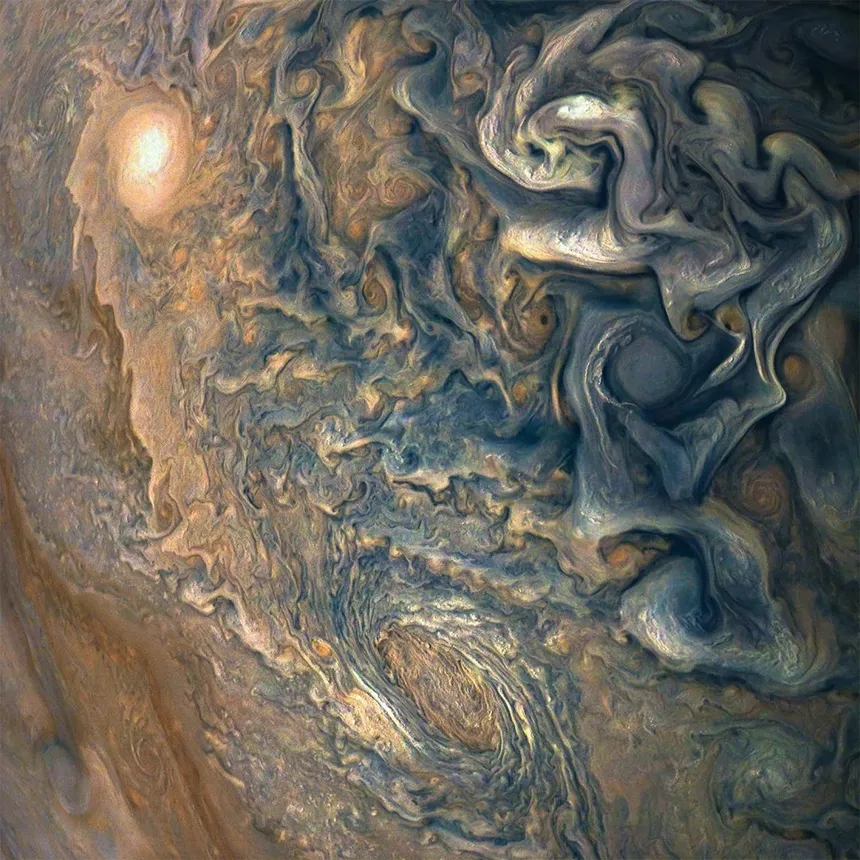

JUPITER


Jupiter, la cinquième planète à partir du Soleil, est la plus grande de notre système solaire. Elle est souvent surnommée le "roi des planètes" en raison de sa taille colossale et de son influence gravitationnelle. Jupiter est une planète fascinante non seulement par sa taille, mais aussi par sa composition, ses nombreuses lunes et ses spectaculaires phénomènes atmosphériques.
| Diamètre moyen | 142 984 km |
|---|---|
| Periode de rotation(en jour)
La période de rotation est la durée mise par un astre pour faire un tour sur lui-même. |
9,93 heures |
| Periode orbitale(année)
La période de révolution, aussi appelée période orbitale, est la durée mise par un astre pour accomplir une révolution complète autour d’un autre astre |
11.86 années |
| Temperature minimal | -108°C |
| Temperature maximale | INCONU |
| Lunes | Plus de 67 |
| Population | 0 |
Caractéristiques générales
Jupiter est une géante gazeuse, composée principalement d'hydrogène et d'hélium. Avec un diamètre d'environ 143 000 kilomètres, elle pourrait contenir plus de 1 300 Terres à l'intérieur de son volume. Sa masse est également impressionnante, représentant plus de deux fois la masse combinée de toutes les autres planètes du système solaire.
Atmosphère et climat
L'atmosphère de Jupiter est composée de plusieurs couches de nuages colorés, principalement constitués d'ammoniac, de méthane et d'eau. Ces nuages forment des bandes horizontales distinctives visibles depuis la Terre. Parmi les caractéristiques les plus marquantes de l'atmosphère de Jupiter, on trouve la Grande Tache Rouge, une immense tempête anticyclonique plus vaste que la Terre et qui dure depuis au moins 400 ans.
Champ magnétique et anneaux
Jupiter possède un champ magnétique extrêmement puissant, environ 20 000 fois plus fort que celui de la Terre. Ce champ magnétique intense crée une immense magnétosphère qui protège la planète et ses lunes des radiations solaires. Bien que moins connus que ceux de Saturne, Jupiter a également un système d'anneaux, principalement composés de particules de poussière microscopiques.
Les lunes de Jupiter
Jupiter est entourée d'un cortège impressionnant de lunes, avec au moins 79 satellites naturels confirmés. Les quatre plus grandes et les plus célèbres sont Io, Europe, Ganymède et Callisto, découvertes par Galilée en 1610. Ces lunes, connues sous le nom de satellites galiléens, présentent chacune des caractéristiques uniques. Par exemple, Europe est réputée pour sa surface glacée et pourrait abriter un océan sous-terrain, tandis que Ganymède est la plus grande lune du système solaire, même plus grande que Mercure.
Exploration et observation
Depuis les premières observations télescopiques de Galilée, Jupiter a été étudiée par plusieurs missions spatiales, dont les sondes Pioneer, Voyager, Galileo et Juno. Ces missions ont fourni une mine d'informations sur la composition, l'atmosphère, les lunes et le champ magnétique de la planète. La sonde Juno, lancée par la NASA en 2011, continue d'envoyer des données précieuses, aidant les scientifiques à comprendre les mystères de cette géante gazeuse.
